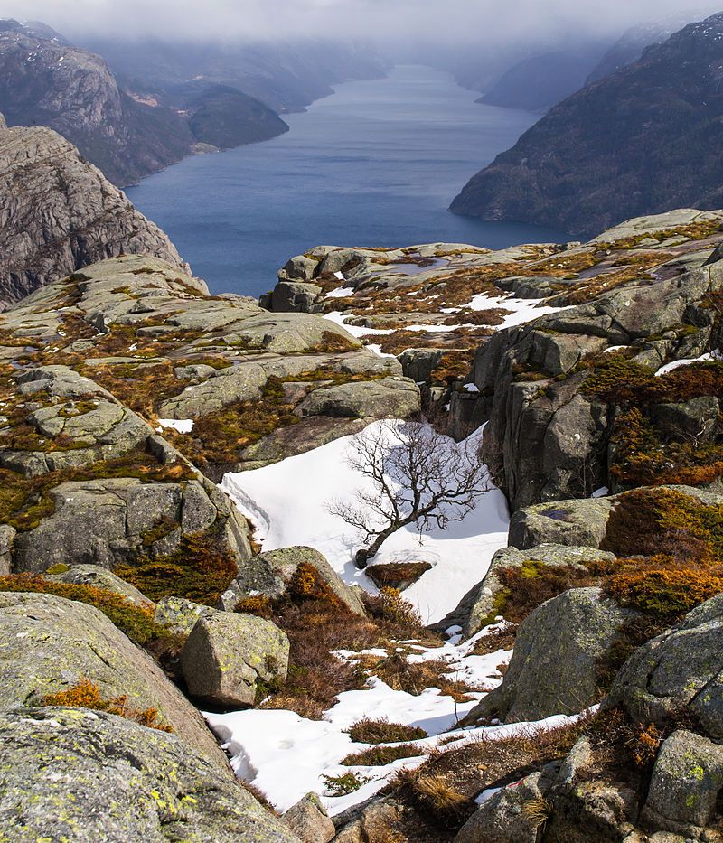
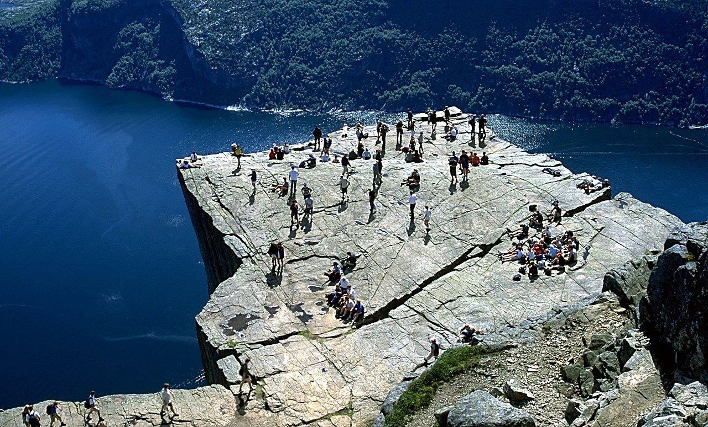
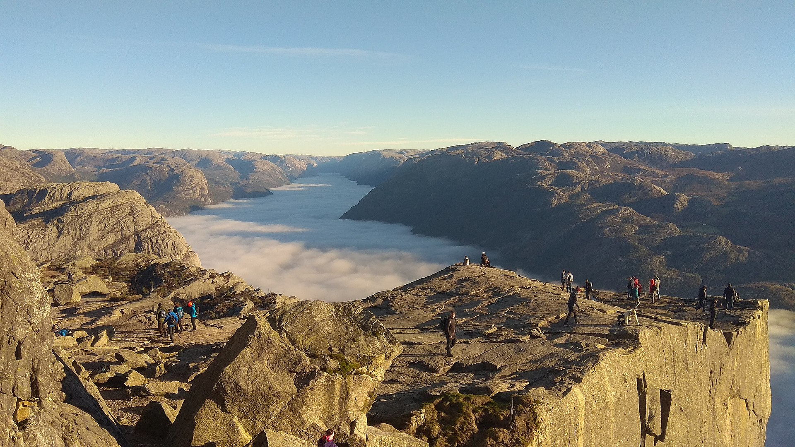
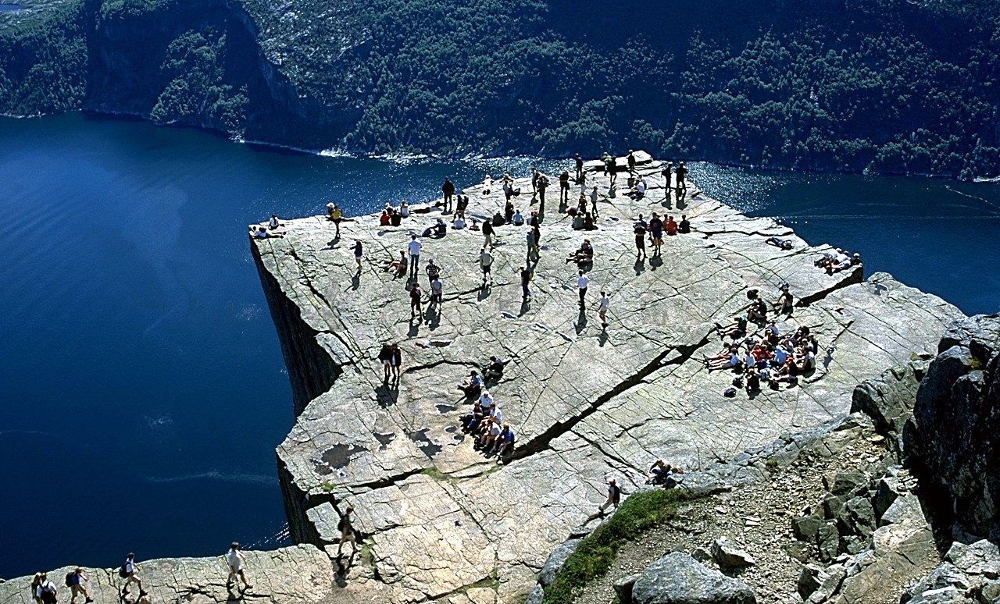
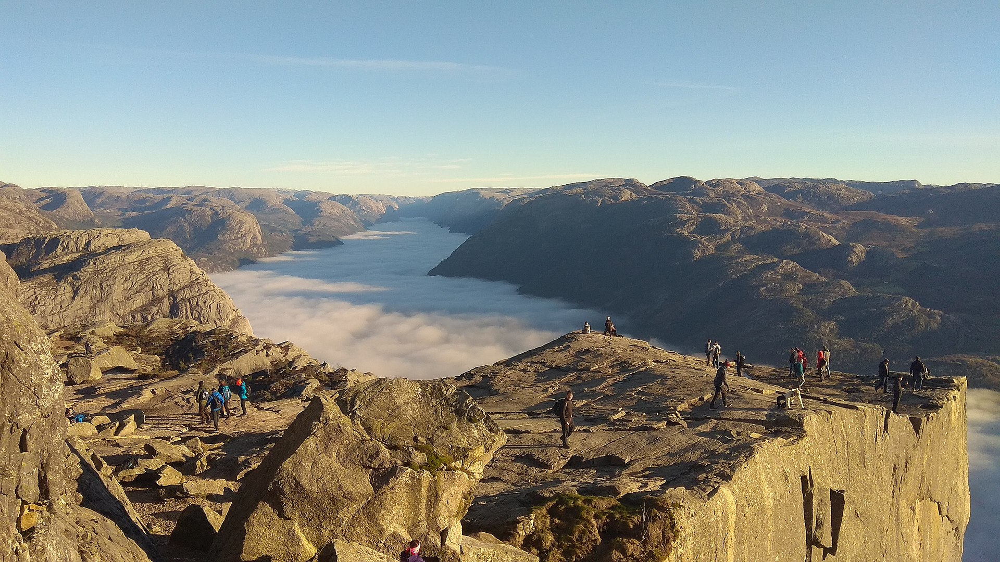

Preikestolen
Name
Access
Nature
Geology
The cliff was formed during the ice age, approximately 10,000 years ago, when the edges of the glacier reached the cliff. The water from the glacier froze in the crevices of the mountain and eventually broke off large, angular blocks, which were later carried away with the glacier. This is the cause of the angular shape of the plateau. Along the plateau itself there continues to be a deep crack. Due to these cracks, the plateau will at some point fall down, but all the geological investigations have revealed that this will not happen in the foreseeable future, and geologists have confirmed the safety of the plateau.
Climate
Along the fjord there is a mild and humid coastal climate.
Improvement Projects
In early April 2013, a project started to improve the path up to
Preikestolen as the old one was so small that it often caused
"delays", and at some points on the path it was sometimes
impossible to get through. By 2016 the path was completed.
In 2019 a new project started to further improve paths, new
website and improvement of signs.
Gallery
 


